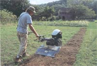
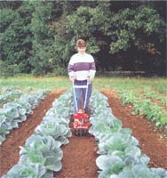
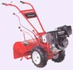
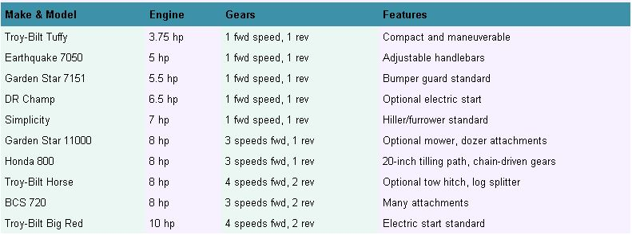
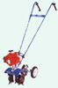
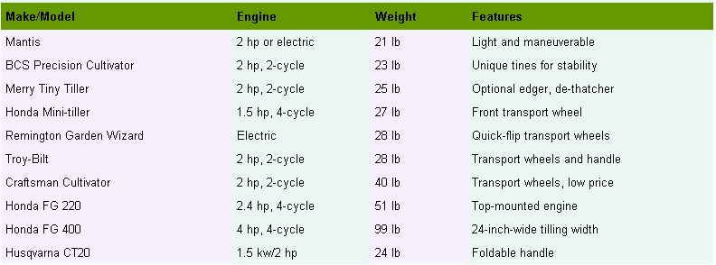

I have to admit, the close relationships I've had with tillers through the years were not all happy affairs. Some included regular Saturday night fights (the half-ton draft animal that hated to start), while other seemingly committed relationships drifted into distant indifference (the front-tined crawler I eventually traded for a food dehydrator).
A few years ago, after breaking too many start cords on a cranky antique with a bad carburetor (it came with the house), I finally did what I should have done years earlier. I bought a tiller that I truly enjoy using.
But I shall not launch into a brand-name testimonial. My gardening life is mine, yours is yours, and the chances that we'd find happiness with the same tiller are pretty darn slim. Instead lets look at the makings of a good fit between garden, gardener and tiller. Get that three-way match right, and you can almost feel your soil smiling under your feet.
The size of your garden is a fair starting point for determining your tiller needs. According to most tiller manufacturers, small gardens of less than 1,500 square feet can be worked with a mini-tiller ($200 to $350). Medium-sized gardens are manageable with a 5- to 6-horsepower tiller ($500 to $800), and big gardens of more than 5,000 square feet call for a tiller with at least a 6-horsepower engine ($800 to $2,000).
Of course there's a lot of wiggle room here, which is good because garden soil comes in many different types, and gardeners themselves come in many different sizes.
Very hard or rocky soil is difficult to work with a lightweight or undersized tiller, which will often skip over a tough spot rather than digging into it. A big, heavy tiller will do a better job in hard soil, but here I must pause to recommend a good plowing for hard-bottomed garden sites. If you turn your heavy soil with a plow in fall or early spring, your tiller will be much more effective. And you can get by with a smaller tiller, which has certain advantages.
Before we go on, let's have a short history lesson: A couple of decades back, the big controversy in tillers pitted traditional front-tined tillers against the upstart design from Troy-Bilt, in which the tines rode behind the engine, on the back. The reartined design has clearly won out, because all of the leading tiller manufacturers have now gone to rear-tined models. (See "Ten True Tillers," Page 86.)
If you're into tillers and speed, get thee to Emerson, Arkansas, for the World Champion Rotary Tiller Race, part of the Purple Hull Pea Festival scheduled for June 27 and 28, 2003. Expect extreme machines and stiff competition from the Waller Team of Three Creeks, Arkansas. Last year, the Wallers' "Wild Thang" set a new record by tilling 200 feet in 6.34 seconds, which computes to 21.5 miles per hour .
One ongoing experiment is having the rear-mounted tines rotate in the opposite direction from the power-driven wheels. This feature, called counter-rotating tines, is still available in a few models, but I heard a good summary of its shortcomings from Larry Reimer, an engineer-farmer-orchardist who lives near Augusta, Kansas. Reimer got to know a counter-rotating tiller firsthand before moving on to a bigger tiller with forward-rotating tines. "Counter-rotating tines dig so aggressively that the self-propelled tires get buried, and you get to the point where you're having to push the tiller along," he explains. "It gets to be a fight."
Reimer has a lot of space to cover in clay soil that bakes rock-hard in summer, so he needs the power and weight of his big Troy-Bilt Horse.
I've also used one, and they're great if you're working in straight rows. One of the drawbacks of rear-tined tillers is they're hard to turn; the bigger the tiller, the more space you need to change directions. The tighter your space, the more reason you have for looking at little tillers.
But you may want a big tiller not only for its tilling abilities but because of the attachments it can run. The biggest tillers can power log splitters, pull a wagonload of rocks or clear snow from a driveway.
In fact, the BCS 720 (8-horsepower) or the Troy-Bilt 10-horsepower Big Red are often called walk-behind tractors; the tillers that go with them are considered attachments.
Mow over existing vegetation before you till. Consider raking, too. This cuts down on how much junk gets caught in the tines of the tiller.
Never till wet soil. Lightly moist is the best soil condition for tilling. If necessary, water extremely dry sites three days before you till.
Avoid tilling overly aggressive or invasive plants that produce rootbuds, such as crabgrass, johnsongrass, bindweed or Canada thistle. Dig them out by hand.
When tilling between rows to control weeds, keep the tilling depth very shallow. Deep tilling injures plant roots and pulls weed seeds to the surface.
Check the oil level in your tiller regularly, and change it before it becomes dark in color, after 15 hours of running time or every two years, whichever comes first.
Use the low gear when operating a heavy tiller in loose soil or on a slope. When operating a big tiller, slow and safe often go together.
If a tiller gets out of control, turn it off. Do not attempt to wrestle it into submission - you will lose. Stop, regroup and start again.
Few spaces are tighter than raised beds, which get rotated often in intensively managed gardens. Although preparing the soil is pretty enjoyable work to do by hand, the availability of a new generation of little tillers that are fast, lightweight and fun to use is changing how some people garden, including me.
Unframed, raised beds don't attract ants or termites, and not having frames to get in the way makes it easy to work organic matter into the soil between plantings using a little tiller.
My small, 3-horsepower, rear-tined tiller only weighs 100 pounds, which is just my size. (I like a tiller I can maneuver easily when it's not running.) But when my soil's quality improves a little more I'm thinking of downsizing to a true mini-tiller, many of which weigh less than 30 pounds.
In fact, many people who use mini-tillers stand tall and smile when big-dog tiller fans make jokes about their toy-sized machines. They don't care, because they're having fun! When your tiller is as maneuverable as a weed-whacker, not only can you renovate a vegetable bed in no time, but you won't feel like you've been run over by a truck when you're done.
Bill Norcott, a MOTHER reader in Hopis, New Hampshire, has been surprised by the power of his 2-horsepower Troy-Bilt mini-tiller. "We use it for weeding and setting up rows, which we do a lot because we have constant rotations," Norcott says. He rented a big tiller to get his garden in shape, but now he and his wife use the mini-tiller exclusively.
"You don't have to manhandle the thing like you do with larger tillers. Plus, with larger tillers there are storage issues."
Norcott describes the sound his tiller makes as "more low-pitched than a weed trimmer," but I can't help but be curious about the quiet operation promised by the newest mini-tillers, the electrics.
Mantis and Remington now sell plug-in mini-tillers, and though I know better than to regard the coal-fired electricity that comes out of my outlets as "clean," at least the tiller is quiet, emits no bad odors, and I won't have to deal with cold starts.
Sorted by size, all of these tillers feature rear-mounted, forward-rotating tines. They take regular unleaded gas. Except for the heavier BCS, weights range from 200 to 350 pounds. Retail prices range from $500 for the smallest models to $3,000 for a top-of-the-line tiller. This list includes a sampling of exemplary models from the major manufacturers. Check manufacturers' Web sites for additional models not described here.
Ten Tiny Tillers
Today's littlest tillers deliver a surprising amount of power in small, easily stored packages. Two-cycle engines require you to mix oil with the gasoline, while four-cycle engines take straight unleaded gas. Prices for these tillers range from $250 to $400, with one- to two-year warranties. This list includes a sampling of exemplary models from the major manufacturers. Check manufacturers' Web sites for additional models not described here.
To ensure responsive starting of your tiller, time after time, Reimer says he thinks that proper end-of-the-season care is absolutely essential. "Drain the gas, and then let the engine run until the fuel lines are dry," he advises.
Norcott mixes only a half-gallon of fuel at a time for his little two-stroke mini, so he always has a fresh batch. Between uses, he runs the tank dry so the fuel lines stay clean.
You often can save money by buying a used tiller, but if you don't know much about small engines beware of several widespread scourges among old tillers: decrepit carburetors, worn-out bushings and shot clutches - all double- or triple-digit repairs.
Indeed, buying a used tiller from a repair shop or small-engine tinkerer is probably smarter than considering one that has been sitting in a garage for years. And, even if you buy a new one, make sure you know what will be involved if parts or repairs are needed. After all, a broken tiller is pretty hard to fit into an envelope.
Of course, if you treat a good tiller properly, you can expect breakdowns to be few and far between. Find the right tiller for your site, soil and personal size, and your garden can't help but prosper.
For more details on available models and features, consult these manufacturers' Web sites:
BCC: bcs-america.com
Craftsman: www.sears.com
DR: www.countryhomeproducts.com
Earthquake: ardisam.com
Garden Star: ardisam.com
Honda: hondapowerequipment.com
Mantis: www.mantisgardentools.com
Merry: www.mackissic.com
Remington: www.desa.com
Simplicity: www.simplicitymfg.com
Troy-Bilt: www.troybilt.com
Husqvarna: www.husqvarna.com
|
 Neil Soderstrom Small tillers work well for shallow cultivation between rows. |
 Mantis Tiny Tillers |
 Troy-Bilt |
|
 BCS |
 |
 |